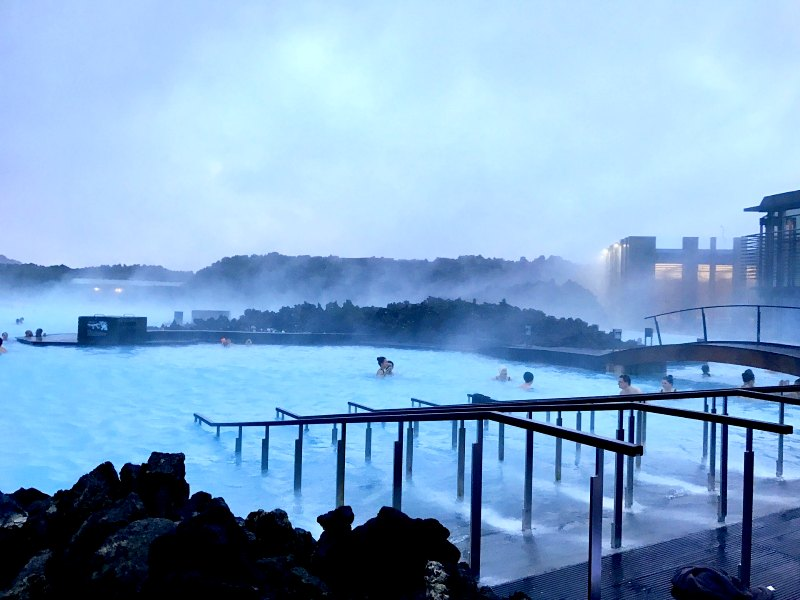
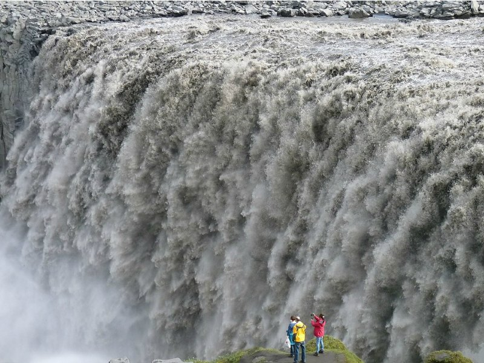
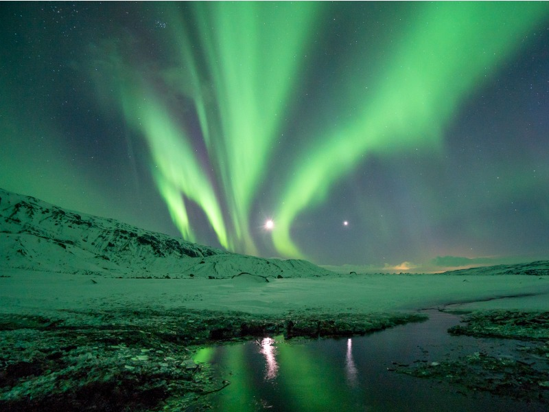
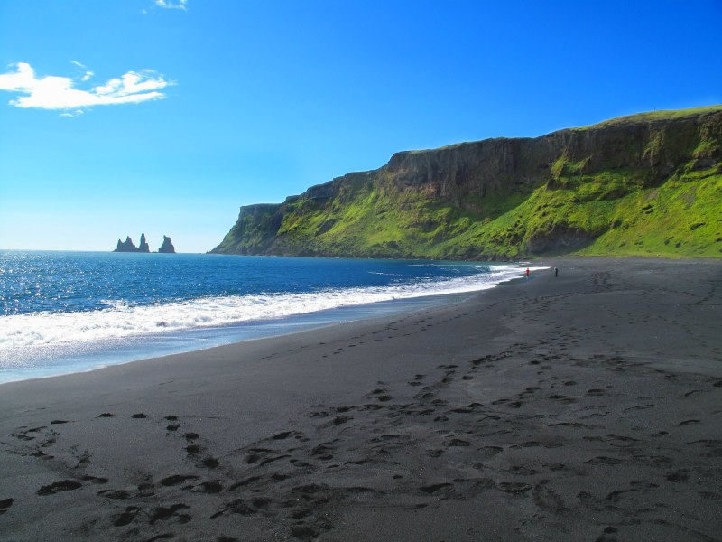

The Blue Lagoon
The geothermal spa is a great way relax and pamper yourself after a trip outdoors, exploring Iceland’s many incredible natural phenomena. Be sure to book ahead of time - this attraction gets very crowded.
Dettifoss Waterfall
Enormous Dettifoss Waterfall is the largest in Iceland, and reputed to be one of the most beautiful waterfalls in the world. It plummets 330 ft. There are a few hiking trails you can use to take in the massive and thundering falls.
Northern Lights
Also called Aurora Borealis, the lights resemble green clouds in the sky to the naked eye, and can really come to life through the camera.
Vik Black Sand beaches
The black sand beaches of Vik are a very popular attraction on the shores of Reynisfjara at the southern tip of Iceland. People have been known to get injured by the especially strong waves and currents of these ocean waters, so be extremely cautious as you marvel at the alluring black sands and stunning views!